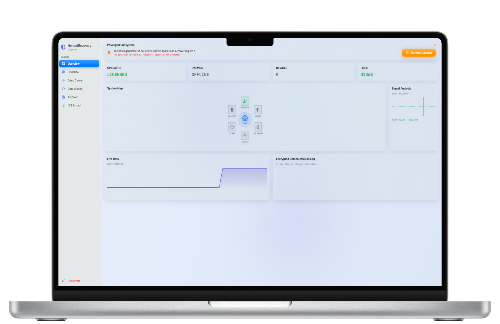
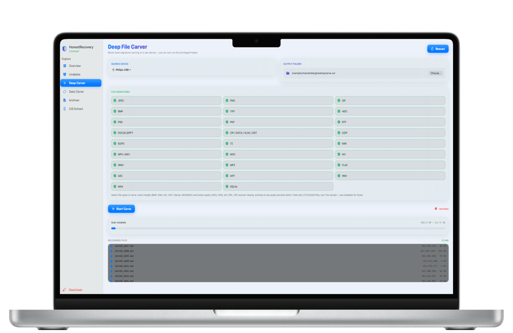
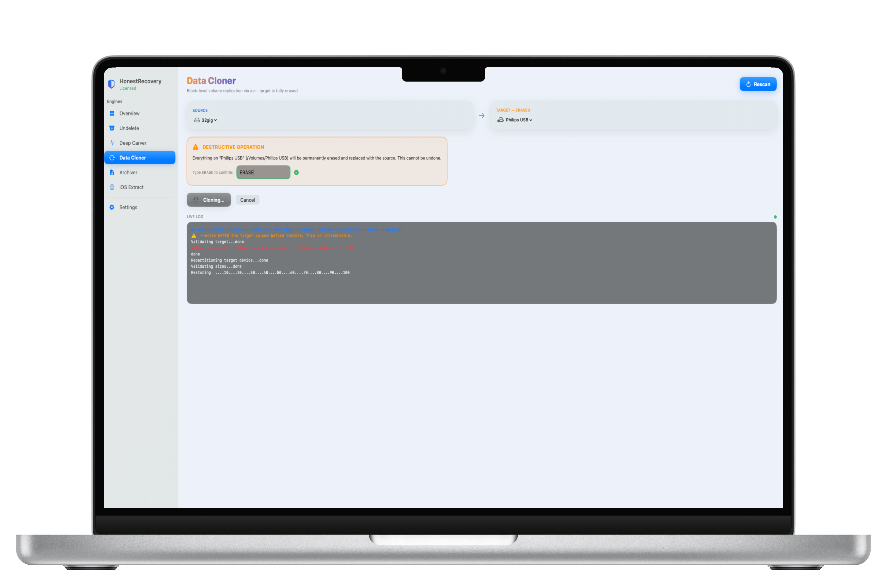
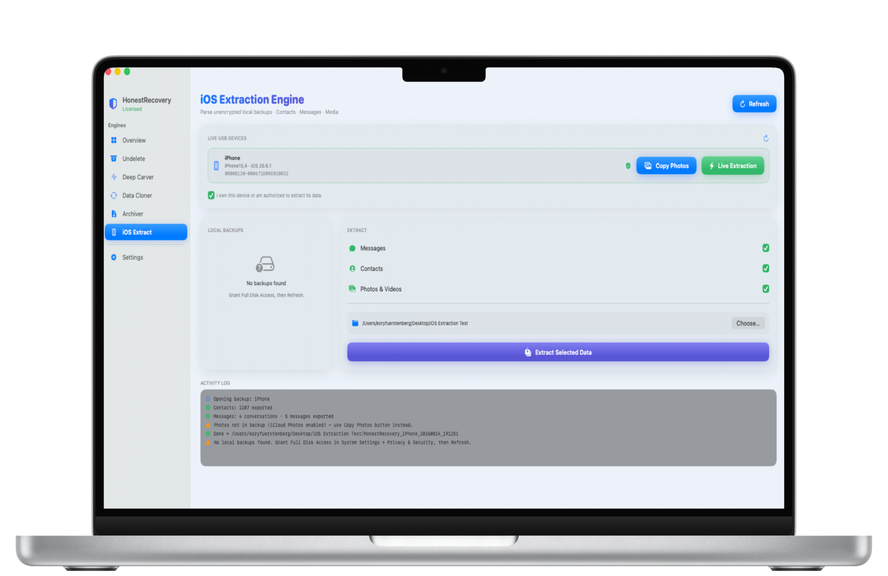

Professional-grade data recovery and digital forensics suite built exclusively for macOS. Designed for investigators, IT professionals, and power users who need direct, uncompromising access to their data.
Direct, low-level access without the safety rails.
Recovers deleted files directly from raw disk devices using low-level hex signature scanning. Operates at the block level via /dev/rdisk access, bypassing the filesystem entirely to find files the OS considers gone.
Creates block-level volume replicas using Apple's asr restore engine. Includes a hardware-level boot-volume safety gate that programmatically refuses to erase the running system.
Packages any folder into a password-protected, compressed Apple Disk Image using 256-bit AES encryption. Password handling never appears in the system process list.
Parses unencrypted local backups to extract Contacts, Messages, Call History, and the full Camera Roll. Includes a live USB extraction mode—no iTunes required.
No subscription. No server. No account. License validation happens entirely on-device using cryptographic key verification. It works permanently offline.
Non-sandboxed, Developer ID signed, and notarized for macOS 13+. Runs a signed privileged helper for operations that require root access.
Clean, native macOS integration.
HonestRecovery runs a signed root daemon in the background to handle destructive operations and low-level block I/O, meaning the main UI operates safely without sandbox violations.

Select specific hex signatures and bypass the filesystem entirely. The progress log feeds directly from the root privileged helper, returning files you thought were gone forever.

Perform highly-destructive block-level replication safely. The UI forces a hardware-level safety gate check before permanently wiping the target disk, completely preventing system self-erasure.

Mount an iPhone via USB and trigger a fresh extraction immediately. Parses Contacts, Messages (including attributedBody encoding), and Media directly to your output folder.

One-time payment. Lifetime access. No telemetry, no check-ins, no forced updates.
Permanent Device Key
Secure checkout powered by Gumroad